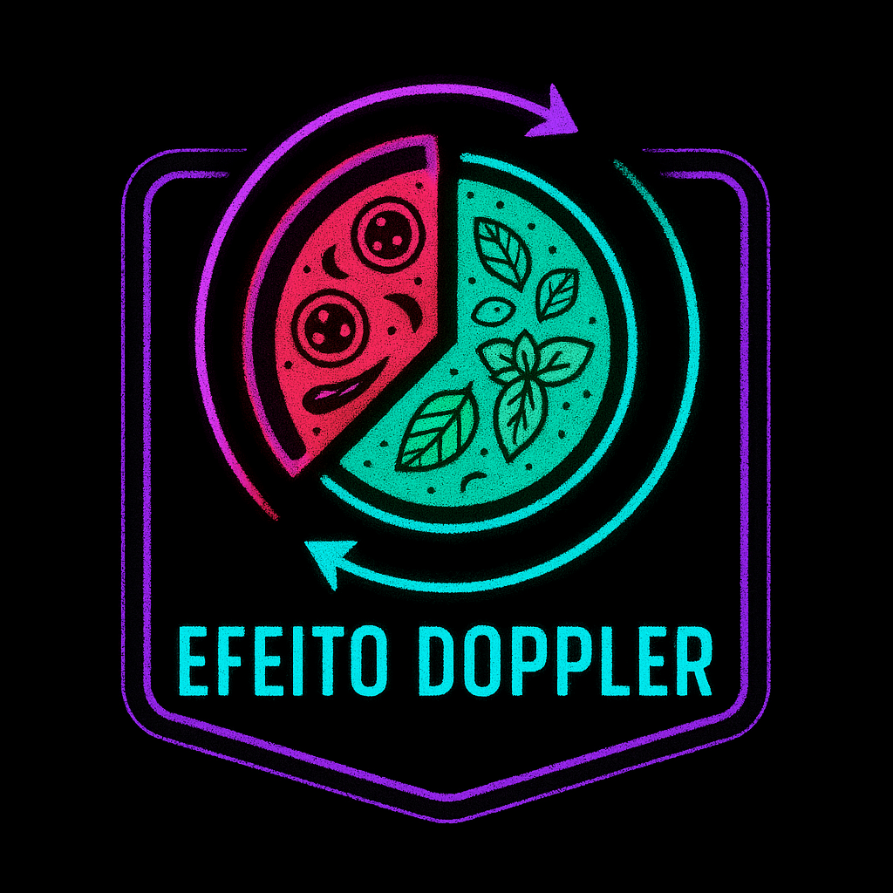
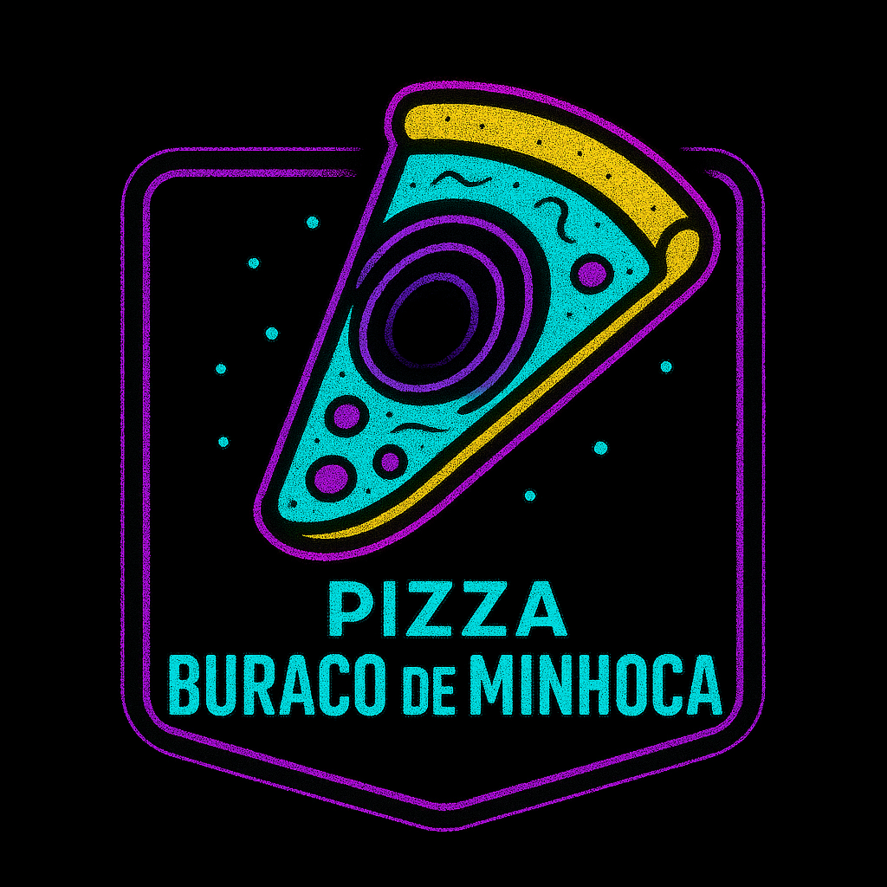
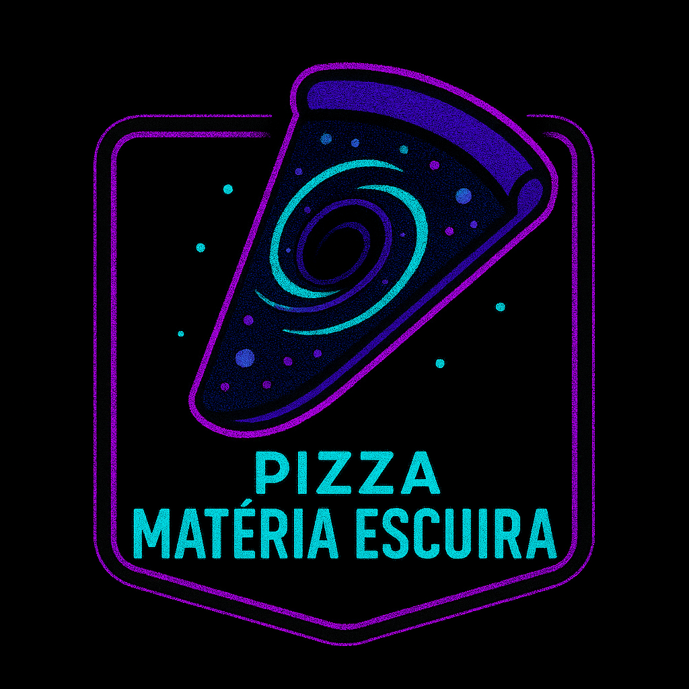
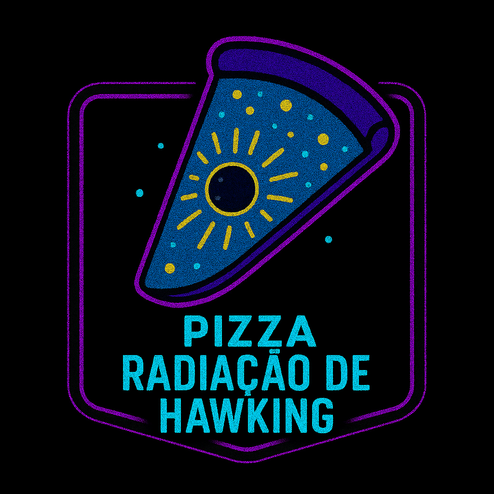
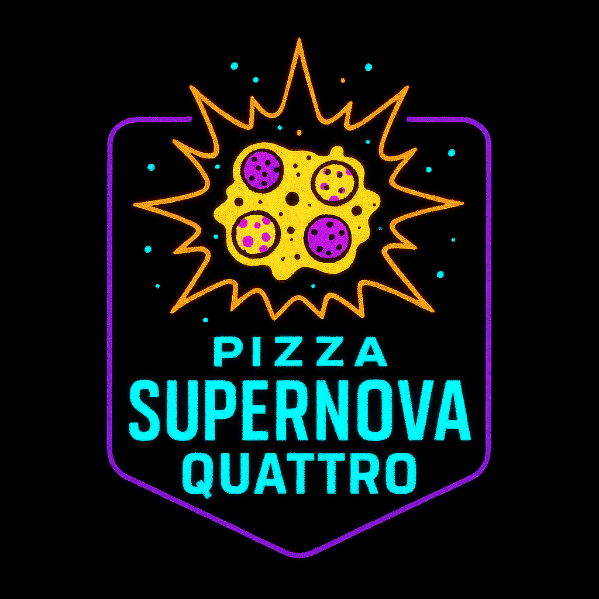

| Prato | Descrição | Preço |
|---|---|---|
|
Pizza Efeito Doppler  |
Metade “redshift” e metade “blueshift”. Ao girar o prato, o sabor “se desloca” na sua direção. | 26 meteoritos |
|
Pizza Buraco de Minhoca  |
Massa em topologia toroidal conectando dois “pontos” de recheio: um lado com pepperoni e o outro com cogumelos — mordidas que “encurtam” a distância entre sabores. | 0,00042 BTC |
|
Pizza Matéria Escura  |
Massa de cacau alcalino e carvão vegetal gastronômico: parece “invisível” à vista, mas a gravidade do umami denuncia sua presença. | 7 quasares |
|
Pizza Radiação de Hawking  |
Borda black com flocos “evaporantes” que liberam calor detectável a qualquer observador. Centro cremoso de burrata para equilíbrio térmico. | 3 anéis de Saturno |
|
Pizza Supernova Quattro  |
Explosão de quatro queijos (gouda, gorgonzola, muçarela e parmesão) com pó de estrela. Brilha antes de colapsar no seu apetite. | 1,21 gigafótons |
Preço: 1 gato
Preço: 2 nebulosas
Preço: 21.000 satoshis